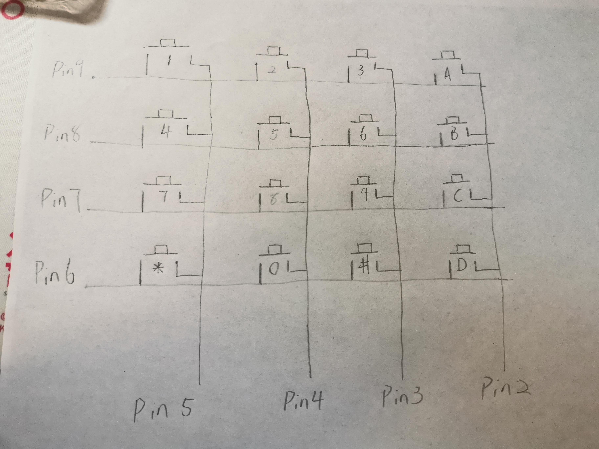
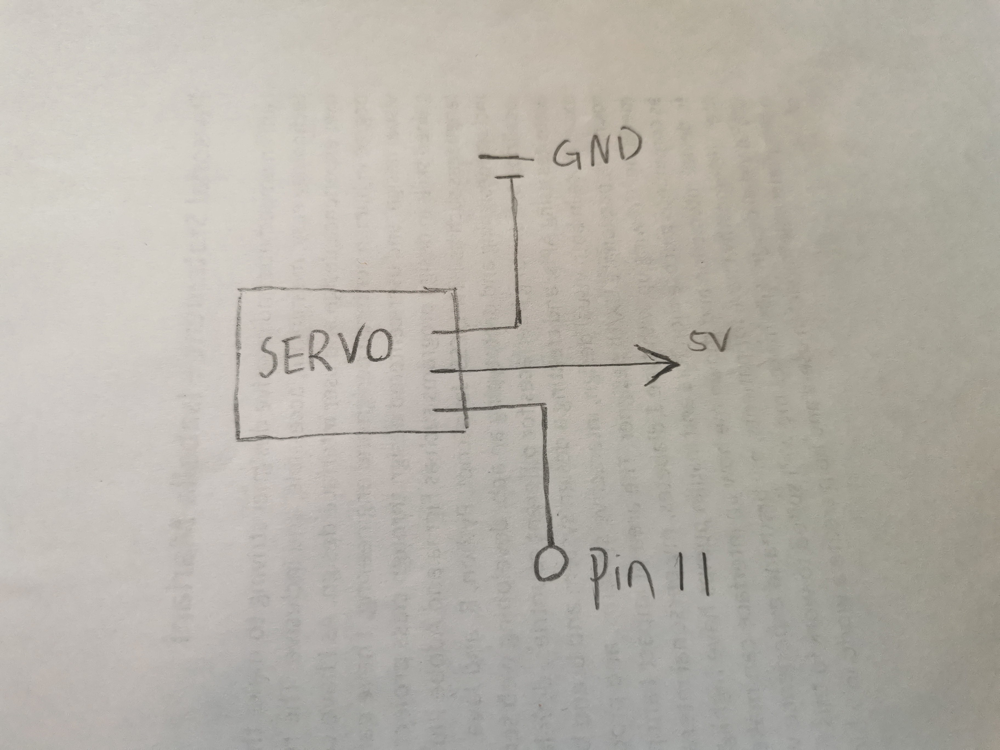
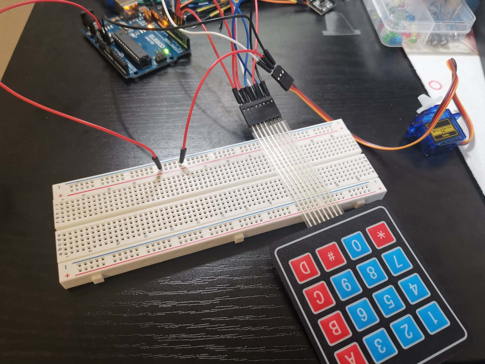

Congyi's Assignment 4!
This assignment contains a schematic, circuit, and code that uses parts from your kit that require a library, and includes both an input part and an output part.
Components in the circuit:
1 Servo motor
1 Keypad
several wires
Schematic:


Circuit:

The circuit was implemented on my breadboard. The keypad is attached to pin 9, 8, 7, 6, 5, 4, 3, 2. The Servo motor is attached to pin 11, 5V, and GND.

The above picture shows the feedbacks in serial monitor as the user input with the keypad.
Firmware:
The program contains one keypad as input and one servo motor as output
It will print those input for giving a reference. 3 input keys will count as a angle for servo motor to work.
If the number is small than 0 or bigger than 180, it will ask the user to try again in the serial monitor.
#include
#include
Servo myServo; // create a servo object
const byte ROWS = 4; //four rows
const byte COLS = 4; //four columns
char keys[ROWS][COLS] = { // set up the rows and columns of the keypad
{'1','2','3','A'}, // the first row is '1','2','3','A'
{'4','5','6','B'}, // the second row is '4','5','6','B'
{'7','8','9','C'}, // the third row is '7','8','9','C'
{'*','0','#','D'} // the fourth row'*','0','#','D'
};
byte rowPins[ROWS] = {9, 8, 7, 6}; //connect to the row pinouts of the keypad
byte colPins[COLS] = {5, 4, 3, 2}; //connect to the column pinouts of the keypad
//Create an object of keypad
Keypad keypad = Keypad( makeKeymap(keys), rowPins, colPins, ROWS, COLS );
int count = 0; // initialize the count number as 0
int angle = 0; // initialize the turning angle as 0
void setup(){
// put your setup code here, to run once:
Serial.begin(9600); // initialize the serial at 9600 bits per second
myServo.attach(11); // attaches the servo on pin 11 to the servo object
}
void loop(){
// put your main code here, to run repeatedly:
char key = keypad.getKey();// Read the key
// Print if key pressed
if (key) {
Serial.print("Key Pressed : "); // print "Key Pressed : " in the serial monitor
Serial.println(key); // print the pressed key in the serial monitor
angle = (angle*10) + (key-48); // operate the angle number from ASCII key number to integer and change its unit
count+=1; // increase the count number by one
if (count >= 3) { // if the user input 3 or more than 3 numbers
Serial.print("Turning angle: "); // print "Turning angle: " in the serial monitor
Serial.println(angle); // print turning angle in the serial monitor
if (angle > 180 || angle < 0){ // if the turning angle is smaller than 0 or greater than 180
Serial.println("You must input a number between 0 and 180. Try again!"); // Print out a prompt and ask user to input the number again
} else { // if the turning angle is between 0 and 180
myServo.write(angle); // let the Servo motor turn at the angle
delay(15); // wait for the servo to get there
}
count = 0; // Reset the count number to 0
angle = 0; //Reset the turnint angle to 0
}
}
}
Circuit's Operation GIF: